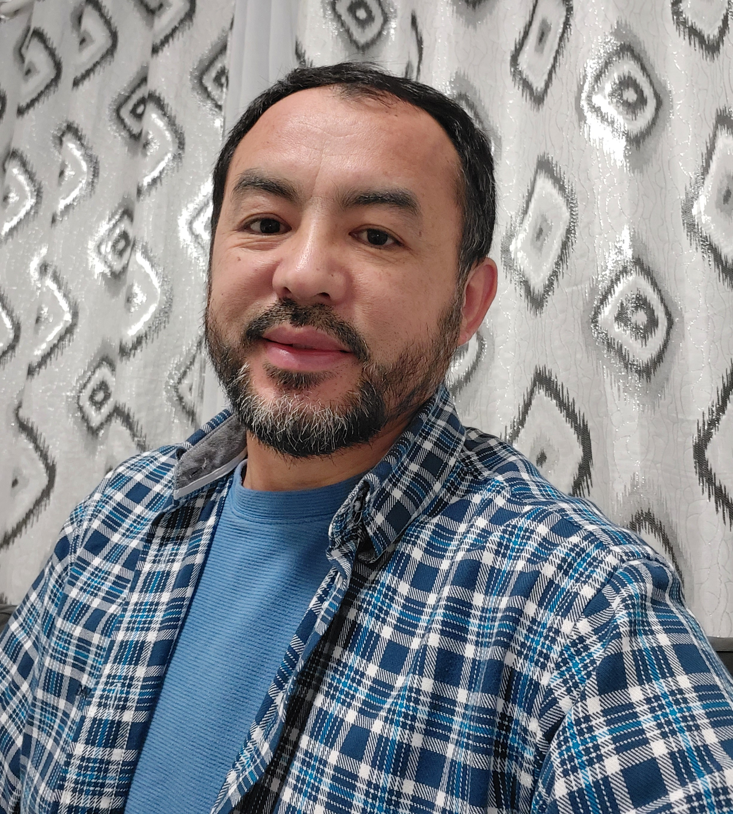

Je suis Magilan KHODJAEV
Développeur Web
PROFIL & OBJECTIFS
Dans le cadre de ma formation professionnelle du développeur Web, je souhaite effectuer un stage comme assistant web développement dans i'informatique.
Créatif et réfléchi, je saurais rapidement m'integrer dans vos équipes et mettre à mon profit mon savoir-faire et mon expérience du terrain pour contribuer à la réussite de vos projets.
- Personne motivée et disciplinée.
- Trouve de la joie à aider les autres.
- Connaissances professionnelles en russe, espagnol, français, turc et ouîghour.
- Esprit d'equipe.